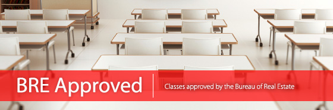

<table width="890" border="0" cellspacing="0" cellpadding="0">
  <tr>
    <td width="578" valign="top"></td>
    <td width="312" valign="top"> <p>If you are a first time REALTOR&reg; or renewing your real estate license, the California Bureau of Real Estate (BRE) requires that you complete specific approved courses to complete your continuing education requirements.  <br />
      <br />
    SDAR offers BRE-approved courses to not only meet state requirements, but also to augment your professional development. Under Sponsor # 0282, SDAR provides the most comprehensive BRE-approved continuing education courses of all California-based local REALTOR&reg; associations. Trust us to get you to the next level.</p></td>
  </tr>
</table>